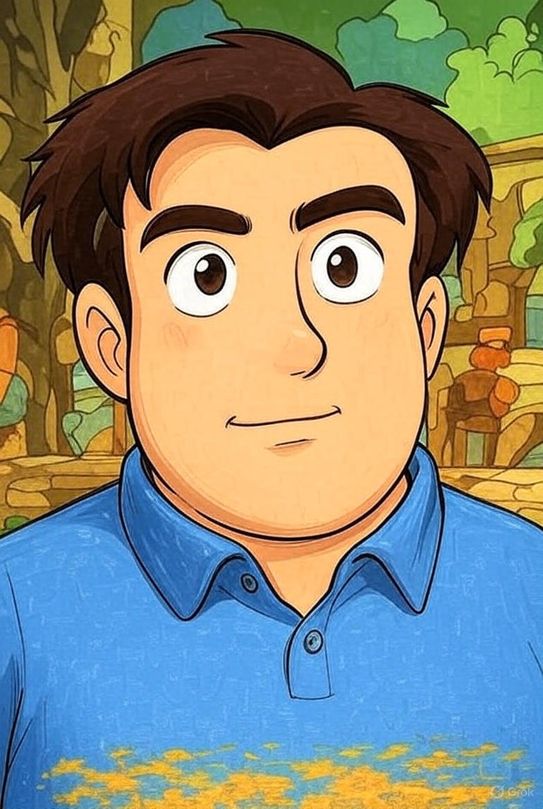

|

|
Nickname:
Vua Béo (Người cai trị vương quốc “béo” với trái tim đầy ắp yêu thương và sự hài hước.)
Sở thích:
Đi chơi khắp nơi, khám phá những điều mới mẻ và không bao giờ từ chối một chuyến đi thú vị. Dù là một chuyến du lịch xa hay chỉ là những buổi tụ tập nhỏ, Vua Béo luôn sẵn sàng lên đường để tìm kiếm niềm vui. Đặc biệt, không có gì vui bằng việc cùng bạn bè và người thân đi ăn uống, khám phá các món ngon ở mọi nơi.
Sở trường:
Luôn muốn lo cho người khác, chăm sóc và mang lại niềm vui cho những người xung quanh. Không chỉ là người bạn đồng hành tuyệt vời trong những chuyến đi, mà còn là người luôn sẵn sàng lắng nghe và sẻ chia, khiến mọi người cảm thấy ấm áp và thoải mái. Vua Béo luôn biết cách làm cho những ai ở bên cạnh mình cảm thấy được quan tâm và yêu thương.
Ước mơ:
Lo thu, dù không phải là một điều dễ dàng nhưng Vua Béo luôn mong muốn tạo dựng được một cuộc sống ổn định và hạnh phúc cho bản thân và những người mình yêu thương. Với một trái tim rộng mở và lòng kiên trì, ước mơ của Vua Béo là tìm được cách cân bằng giữa công việc và niềm vui, để mỗi ngày trôi qua đều tràn đầy niềm vui và sự thỏa mãn.
Dự định tương lai:
Đi chơi với Minh Khôi, người bạn thân thiết luôn đồng hành cùng Vua Béo trong mọi chuyến hành trình. Cả hai sẽ cùng nhau khám phá những địa điểm mới, thử những món ăn độc đáo và tạo ra những kỷ niệm không thể quên. Tương lai của Vua Béo không chỉ là về những chuyến đi, mà còn là một hành trình của tình bạn, sự sẻ chia và những khoảnh khắc đầy tiếng cười.
|